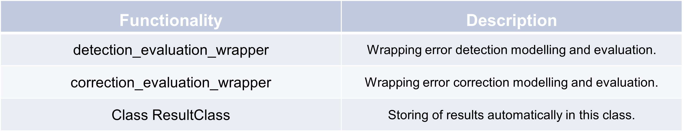

Evaluation handler#
Evaluation handler for error detection#
The first example showcases the process of generating random sensor data, setting up a DataFrame with specific columns, and
performing an error detection and evaluation using the TSCC framework. The example data set includes ground truth,
raw sensor readings, and additional features, with some values randomly altered to simulate errors. A configuration
object is created to specify the target detection and correction columns, sensor type, and event identification.
The detection_evaluation_wrapper function is then applied with two detection methods —range plausibility and
step-change maximum — to assess the sensor data, returning detection results including the evalution metrics
true positives, false negatives, recall, and other relevant statistics for both training and test sets.
In det_stat_methods, a list of quality procedures is given.
A quality procedure can consist of one or multiple error detection methods. In example one, single methods are used as
quality procedures. In example two, five methods are used together as one quality procedure.
Function parameters of error detection methods can be passed by listing the argument values within parentheses after
the function name, separated by commas. In the provided examples, various detection methods from the TSCC.detection
module are called with their respective parameters, where each inner tuple represents a function call with its specific
arguments.
>>>nr_obs = 6
>>>np.random.seed(0)
>>># Generate random data
>>>data = np.random.randn(nr_obs, 4)
>>>time_index = pd.date_range(start='2023-01-01 00:00', periods=nr_obs, freq='30T')
>>>
>>># Create DataFrame with specified column names
>>>df = pd.DataFrame(data, columns=["ground_truth", "raw", 'fea_1', 'fea_2'], index = time_index)
>>>df["raw"] = df["ground_truth"] + np.random.normal(0, 5, nr_obs)*np.random.randint(0, 2, nr_obs)
>>>df["isCorrect_gt"] = df["ground_truth"] == df["raw"]
>>>df["error_class"] = np.nan
>>>df["isEvent"] = np.nan
>>>print(df)
ground_truth raw fea_1 fea_2 \
2023-01-01 00:00:00 1.764052 13.112825 0.978738 2.240893
2023-01-01 00:30:00 1.867558 1.867558 0.950088 -0.151357
2023-01-01 01:00:00 -0.103219 0.125574 0.144044 1.454274
2023-01-01 01:30:00 0.761038 0.761038 0.443863 0.333674
2023-01-01 02:00:00 1.494079 1.494079 0.313068 -0.854096
2023-01-01 02:30:00 -2.552990 4.793804 0.864436 -0.742165
isCorrect_gt error_class isEvent
2023-01-01 00:00:00 False NaN NaN
2023-01-01 00:30:00 True NaN NaN
2023-01-01 01:00:00 False NaN NaN
2023-01-01 01:30:00 True NaN NaN
2023-01-01 02:00:00 True NaN NaN
2023-01-01 02:30:00 False NaN NaN
>>>config = TSCC.assessment.Config(
>>> colname_target_det="isCorrect_gt",
>>> colname_target_corr="ground_truth",
>>> colname_raw="raw",
>>> sensortype = "precipitation",
>>> colname_isEvent = "isEvent")
>>>
>>>dataSetHandler = TSCC.preprocessing.DataSetHandler(df, config)
>>>
>>>d, resultClass = TSCC.assessment.detection_evaluation_wrapper(
>>> config = config,
>>> dataSetHandler = dataSetHandler,
>>> det_stat_methods = [
>>> (TSCC.detection.BASIC_byRange,
>>> TSCC.preprocessing.rangePlausVals.dict[config.sensortype]["lower_boundary"] * 5,
>>> TSCC.preprocessing.rangePlausVals.dict[config.sensortype]["upper_boundary"] * 5),
>>> (TSCC.detection.BASIC_byStepChangeMax, 1),
>>>])
>>>print(resultClass.det_eval)
ID model data_set cv \
0 raw <function BASIC_byRange at 0x000001D2C7BFB820> train 0
1 raw <function BASIC_byRange at 0x000001D2C7BFB820> r-1.25 train 0
2 raw <function BASIC_byRange at 0x000001D2C7BFB820> isEvent train 0
3 raw <function BASIC_byRange at 0x000001D2C7BFB820> test 0
4 raw <function BASIC_byRange at 0x000001D2C7BFB820> r-1.25 test 0
5 raw <function BASIC_byRange at 0x000001D2C7BFB820> isEvent test 0
6 raw <function BASIC_byStepChangeMax at 0x000001D2C... train 0
7 raw <function BASIC_byStepChangeMax at 0x000001D2C... r-1.25 train 0
8 raw <function BASIC_byStepChangeMax at 0x000001D2C... isEvent train 0
9 raw <function BASIC_byStepChangeMax at 0x000001D2C... test 0
10 raw <function BASIC_byStepChangeMax at 0x000001D2C... r-1.25 test 0
11 raw <function BASIC_byStepChangeMax at 0x000001D2C... isEvent test 0
tn fp fn tp tpr tnr fpr fnr recall n_obs
0 2 0 2 0 0.0 1.0 0.0 1.0 0.0 4
1 1 0 1 0 0.0 1.0 0.0 1.0 0.0 2
2 0 0 0 0 NaN NaN NaN NaN NaN 0
3 1 0 1 0 0.0 1.0 0.0 1.0 0.0 2
4 0 0 1 0 0.0 NaN NaN 1.0 0.0 1
5 0 0 0 0 NaN NaN NaN NaN NaN 0
6 1 0 1 0 0.0 1.0 0.0 1.0 0.0 2
7 1 0 0 0 NaN NaN NaN NaN NaN 1
8 0 0 0 0 NaN NaN NaN NaN NaN 0
9 0 0 1 0 0.0 NaN NaN 1.0 0.0 1
10 0 0 1 0 0.0 NaN NaN 1.0 0.0 1
11 0 0 0 0 NaN NaN NaN NaN NaN 0
>>>config = TSCC.assessment.Config(
>>> colname_target_det="isCorrect_gt",
>>> colname_target_corr="ground_truth",
>>> colname_raw="raw",
>>> sensortype = "precipitation",
>>> colname_isEvent = "isEvent")
>>>
>>>dataSetHandler = TSCC.preprocessing.DataSetHandler(df, config)
>>>
>>>d, resultClass = TSCC.assessment.detection_evaluation_wrapper(
>>> config = config,
>>> dataSetHandler = dataSetHandler,
>>> det_stat_methods = [
>>> ((TSCC.detection.BASIC_byExistance, -999, float),
>>> (TSCC.detection.STAT_byDistFromCenter,10),
>>> (TSCC.detection.BASIC_byStepChangeMax, 10),
>>> (TSCC.detection.STAT_byIQR, 0.05, 0.95, 1.5),
>>> (TSCC.detection.STAT_byZScore,)),
>>> ])
>>>print(resultClass.det_eval)
ID model data_set cv \
0 raw [<function BASIC_byExistance at 0x0000023E9179... train 0
1 raw [<function BASIC_byExistance at 0x0000023E9179... r-1.25 train 0
2 raw [<function BASIC_byExistance at 0x0000023E9179... isEvent train 0
3 raw [<function BASIC_byExistance at 0x0000023E9179... test 0
4 raw [<function BASIC_byExistance at 0x0000023E9179... r-1.25 test 0
5 raw [<function BASIC_byExistance at 0x0000023E9179... isEvent test 0
tn fp fn tp tpr tnr fpr fnr recall n_obs
0 1 0 1 0 0.0 1.0 0.0 1.0 0.0 2
1 0 0 0 0 NaN NaN NaN NaN NaN 0
2 0 0 0 0 NaN NaN NaN NaN NaN 0
3 1 0 1 0 0.0 1.0 0.0 1.0 0.0 2
4 0 0 1 0 0.0 NaN NaN 1.0 0.0 1
5 0 0 0 0 NaN NaN NaN NaN NaN 0
>>>resultClass.det_eval.model[0]
'[<function BASIC_byExistance at 0x0000023E9179B820>,
<function STAT_byDistFromCenter at 0x0000023E916B1280>,
<function BASIC_byStepChangeMax at 0x0000023E9179B9D0>,
<function STAT_byIQR at 0x0000023E9179B160>,
<function STAT_byZScore at 0x0000023E9179B700>]'
Evaluation handler for error correction#
This example demonstrates the evaluation process for error correction using the TSCC framework. The
correction_evaluation_wrapper function is called with a configuration and dataset handler, returning results stored
in dictionary d and a classification object resultClass. The output table shows various evaluation metrics for
the correction model, including mean squared error (MSE), root mean squared error (RMSE), mean absolute error (MAE), and
Nash-Sutcliffe efficiency (NSE) for both training and test sets. These metrics help assess the performance and accuracy
of the error correction model across different data sets.
>>>corr_ML_methods = [(TSCC.correction.ML_byRF,), (TSCC.correction.ML_byMissForest,),]
>>>d, resultClass = TSCC.assessment.\
>>> correction_evaluation_wrapper(config, dataSetHandler, "isError_pred", corr_ML_methods, [])
>>>resultClass.corr_eval
ID model data_set cv mse mse-rel-root mse-rel-ind 1.25 \
0 3 CORR_ML_RF train 0 0.000001 0.000002 NaN
1 3 CORR_ML_RF r-1.25 train 0 NaN NaN NaN
2 3 CORR_ML_RF isEvent train 0 NaN NaN NaN
3 3 CORR_ML_RF test 0 0.000004 0.000008 NaN
4 3 CORR_ML_RF r-1.25 test 0 NaN NaN NaN
ind1-rel-ind 1.25 rate-rel-ind 1.25 rmse mae nse n_obs \
0 NaN NaN 0.001111 0.000119 1.00 95635
1 NaN NaN NaN NaN NaN 0
2 NaN NaN NaN NaN NaN 0
3 NaN NaN 0.002041 0.001201 0.99 23908
4 NaN NaN NaN NaN NaN 0
sera
0 0.025894
1 0.000000
2 0.000000
3 0.019133
4 0.000000